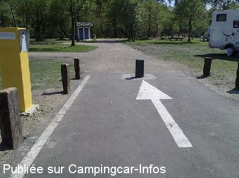

ASN = Aire de services avec stationnement nuit possible de :
GASTES
(N° 348)
Accès/adresse :
Avenue du Lac
40160 GASTES
40160 GASTES
Latitude : (Nord) 44.32891° Décimaux ou 44° 19′ 44′′
Longitude : (Ouest) -1.15101° Décimaux ou -1° 9′ 3′′
Tarif : 2015
Stationnement, services : 2 à 7 €
Type de borne : Autre
Services :


Sanitaire
Un boulanger passe
Commerces
Restauration
École de voile Location de catamarans, planches à voile et canoës
Autres informations :
Ouvert toute l'année
100 emplacements calmes
http://www.tourismelandes.com/aires-camping-car-landes/ACCAQU040010000I/detail/gastes/aire-de-camping-cars-de-gastes
Le 12/01/2013 par Obelix
Le 12/01/2013 par Obelix

Le 08/08/2012 par cathare
Le 08/08/2012 par cathare
Le 25/05/2010 par Eric-Kti

Le 26/04/2010 par jeanphy
de
mahe
le 04/06/2015 :
Superbe aire sur terrain herbeux ; halte tres agreable en bordure du port et pistes cyclables a proximité. Reglement par carte bancaire.
Superbe aire sur terrain herbeux ; halte tres agreable en bordure du port et pistes cyclables a proximité. Reglement par carte bancaire.
de
Caths
le 01/07/2013 :
Aire très sympa
calme et repos garantie
Ici pour encore quelques jours
Le resto cité plus bas vient juste de changer de propriétaire, on va essayer pour voir ...
En plus à la sortie du village à 3 km en vélo, il y a une boutique de pièces qui a un stock incroyable!!!
Mon mari y est allé plusieurs fois et à trouver tout pour bricoler sur notre camping-car
Adresse à conservée
Aire très sympa
calme et repos garantie
Ici pour encore quelques jours
Le resto cité plus bas vient juste de changer de propriétaire, on va essayer pour voir ...
En plus à la sortie du village à 3 km en vélo, il y a une boutique de pièces qui a un stock incroyable!!!
Mon mari y est allé plusieurs fois et à trouver tout pour bricoler sur notre camping-car
Adresse à conservée
de
lufloarsa
le 28/05/2013 :
Rien à rajouter au commentaire d'Alain
très agréable
très calme
belles balades à pied ou à vélo
Rien à rajouter au commentaire d'Alain
très agréable
très calme
belles balades à pied ou à vélo
de
alain
le 28/09/2012 :
aire très sympa, calme la nuit. commerces de bouche à 5' à pied ( resto supérette avec pain frais )plus laverie avec sèche linge, tout pour rendre heureux un camping cariste. Belles ballades à pied où en vélo sur les pistes cyclabes toutes proches. De passage dans cette région, j'y retournerai sans aucun souci. Merci à la municipalité de GASTE
aire très sympa, calme la nuit. commerces de bouche à 5' à pied ( resto supérette avec pain frais )plus laverie avec sèche linge, tout pour rendre heureux un camping cariste. Belles ballades à pied où en vélo sur les pistes cyclabes toutes proches. De passage dans cette région, j'y retournerai sans aucun souci. Merci à la municipalité de GASTE
de
cyclone01
le 26/08/2012 :
Je confirme le message de kiki01, aire très bien, reste des places disponibles ce jour 26 aout 2012 (j'y suis). belles petites balades a faire en vélo.... le lac tout proche avec base nautique......
Je confirme le message de kiki01, aire très bien, reste des places disponibles ce jour 26 aout 2012 (j'y suis). belles petites balades a faire en vélo.... le lac tout proche avec base nautique......
de
kiki01
le 25/08/2012 :
La ROLLS des aires de CC.
Très calme, ombragé, piste cyclable juste à côté. Plage à 50m. Sanitaires. Le coin est très reposant et super agréable.
Tout simplement j'ai adoré !!!
La ROLLS des aires de CC.
Très calme, ombragé, piste cyclable juste à côté. Plage à 50m. Sanitaires. Le coin est très reposant et super agréable.
Tout simplement j'ai adoré !!!
de
K. H. Huber
le 05/04/2012 :
Der Stellplatz ist schön angelegt in unmittelbarer Nähe zum "Étang de Biscarrosse et de Parentis", nur durch eine schmale Straße getrennt. Schatten spendet ein lichter Baumbestand. Ver- und Entsorgung an einem Toilettenhaus. Der Platz kann uneingeschränkt empfohlen werden. Die Platzzufahrt wird durch einen Automaten geregelt. Es kann nur mit Kreditkarte, nicht mit MaestroCard und nicht mit Bargeld bezahlt werden.
Der Stellplatz ist schön angelegt in unmittelbarer Nähe zum "Étang de Biscarrosse et de Parentis", nur durch eine schmale Straße getrennt. Schatten spendet ein lichter Baumbestand. Ver- und Entsorgung an einem Toilettenhaus. Der Platz kann uneingeschränkt empfohlen werden. Die Platzzufahrt wird durch einen Automaten geregelt. Es kann nur mit Kreditkarte, nicht mit MaestroCard und nicht mit Bargeld bezahlt werden.
de
inquel gerard
le 06/08/2011 :
aire très sympathique en bord du lac.De passage fin juillet aucun soucis pour le stationnement.Bien sur les places à l'ombre sont plus prisées mais en arrivant de bonne heure aucun soucis.Un bloc sanitaire avec douche(froide),evier pour la vaisselle et wc.espace vidange sans problème.Borne accès 7E avec sortie à volonté.Merci à la commune pour cette aire comme on souhaiterait en voir nombreuses.
aire très sympathique en bord du lac.De passage fin juillet aucun soucis pour le stationnement.Bien sur les places à l'ombre sont plus prisées mais en arrivant de bonne heure aucun soucis.Un bloc sanitaire avec douche(froide),evier pour la vaisselle et wc.espace vidange sans problème.Borne accès 7E avec sortie à volonté.Merci à la commune pour cette aire comme on souhaiterait en voir nombreuses.
de
Michel et Dominique
le 17/01/2011 :
une très belle aire située à côté du port de plaisance et au bord du lac de Parentis avec piste cyclable
très calme
une très belle aire située à côté du port de plaisance et au bord du lac de Parentis avec piste cyclable
très calme
de
BRUBION
le 22/08/2010 :
Nous y sommes restés 3 nuits de suite tellement c'était agréable. Par contre, une petite correction, le boulanger ne passe plus tous les jours mais seulement 3 fois par semaine entre 10h15 et 10h30. Il faut l'attendre à l'entrée de l'aire.
La partie ombragée a été très prisée, il faisait très chaud (35°C air et 30°C dans l'eau du lac). Concernant le lac, les adeptes de la natation devront marcher longtemps pour ne plus avoir pied. Idéal lorsqu'il y a de jeunes enfants ou des animaux par exemple.
Nous y sommes restés 3 nuits de suite tellement c'était agréable. Par contre, une petite correction, le boulanger ne passe plus tous les jours mais seulement 3 fois par semaine entre 10h15 et 10h30. Il faut l'attendre à l'entrée de l'aire.
La partie ombragée a été très prisée, il faisait très chaud (35°C air et 30°C dans l'eau du lac). Concernant le lac, les adeptes de la natation devront marcher longtemps pour ne plus avoir pied. Idéal lorsqu'il y a de jeunes enfants ou des animaux par exemple.